Transfer ULD to Aircraft Interface
Move the ULD from high loader to the aircraft ball-mat or roller-track interface.
Airport ULD automation / July 2026
Real-robot deployment part
The ULD loading cycle contains eight connected operations. The initial deployment focuses automation on in-cargo movement, precise alignment, lock engagement and verification while preserving human oversight at the aircraft interface and final safety checks.
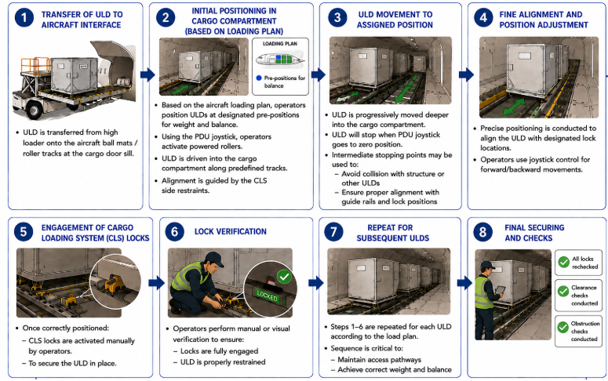
Move the ULD from high loader to the aircraft ball-mat or roller-track interface.
Pre-position cargo from the loading plan and activate powered rollers.
Operate the joystick, control travel and monitor rail clearance inside the compartment.
Automation priorityAlign the ULD to designated lock locations with perception-guided forward/backward control.
Automation priorityInteract with cargo loading system locks to secure the ULD in place.
Automation priorityConfirm full engagement, restraint and correct ULD position with vision and force evidence.
Automation prioritySequence steps 1–6 according to the load plan while maintaining access and weight balance.
Recheck locks, clearance and obstruction status before operational sign-off.
A physics-grounded asset and evaluation stack for turning the ULD workflow into measurable robot capability: build the right digital twins, score the task in simulation and predict real-world readiness.
Higher physical fidelity where the robot actually touches the aircraft system: joystick controls, panels, CLS locks, cargo-area geometry and the manipulator itself.
Model detents, travel limits, switch states and the force profile required for A330/A350/B777/B787 control interfaces.
Capture compartment geometry, roller tracks, guide rails, ULD clearances and material friction during movement and alignment.
Represent A330/A350/B777/B787 latch geometry, compliance, interference and engagement tolerances.
Connect visual state, tactile response and reaction force to a physically meaningful locked/unlocked result.
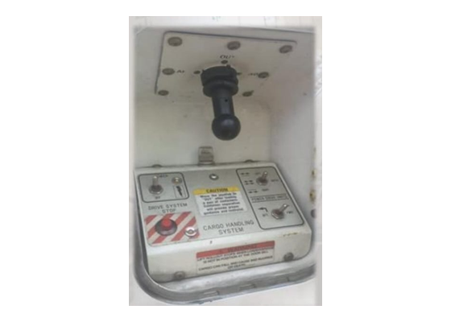
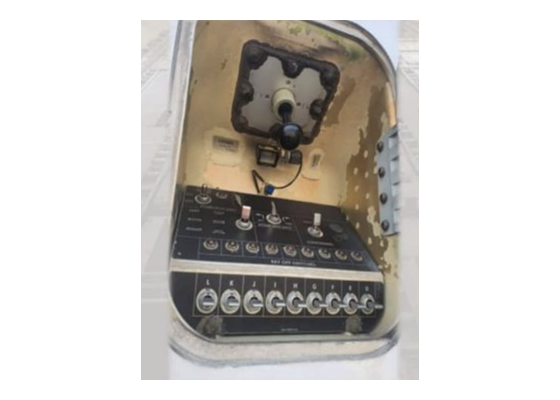
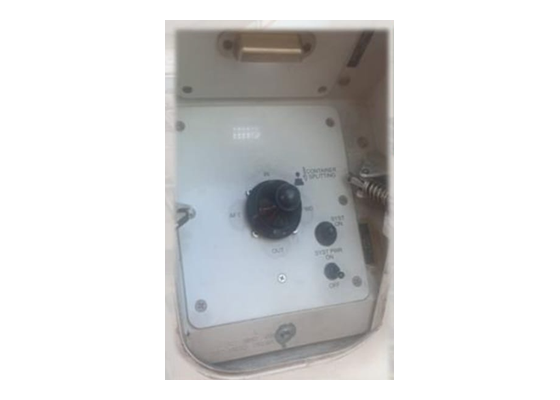
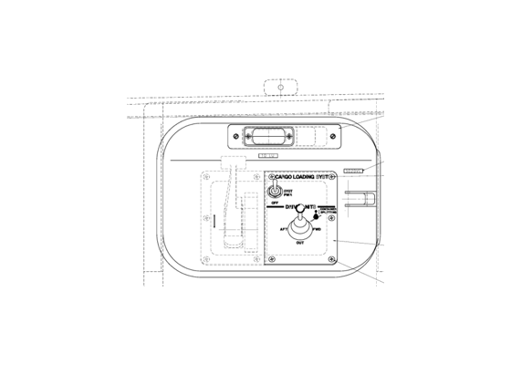
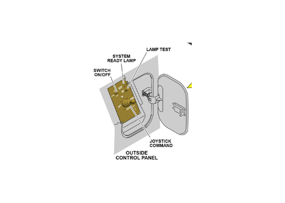
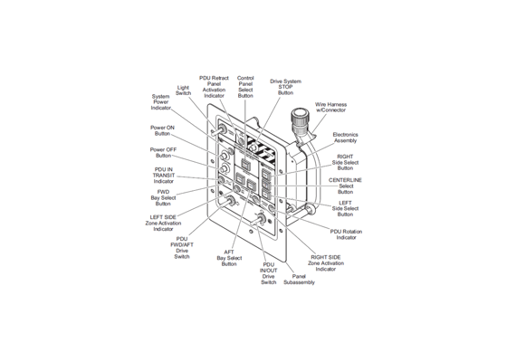
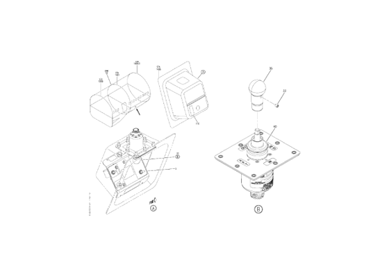
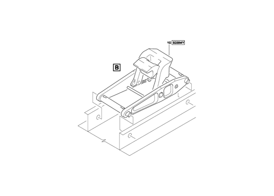
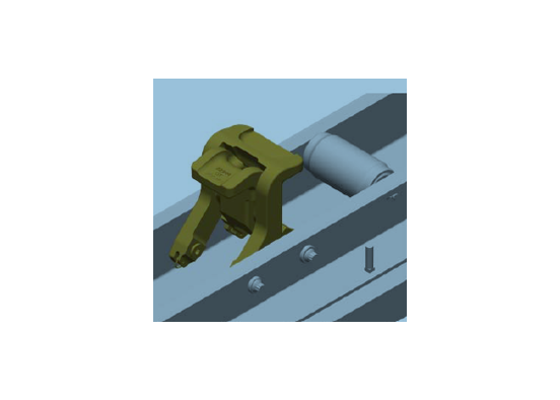
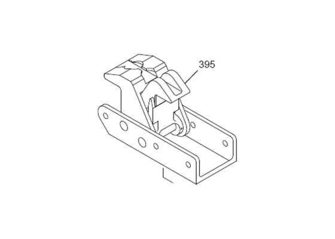
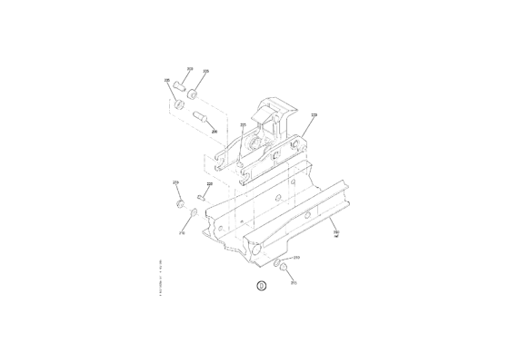
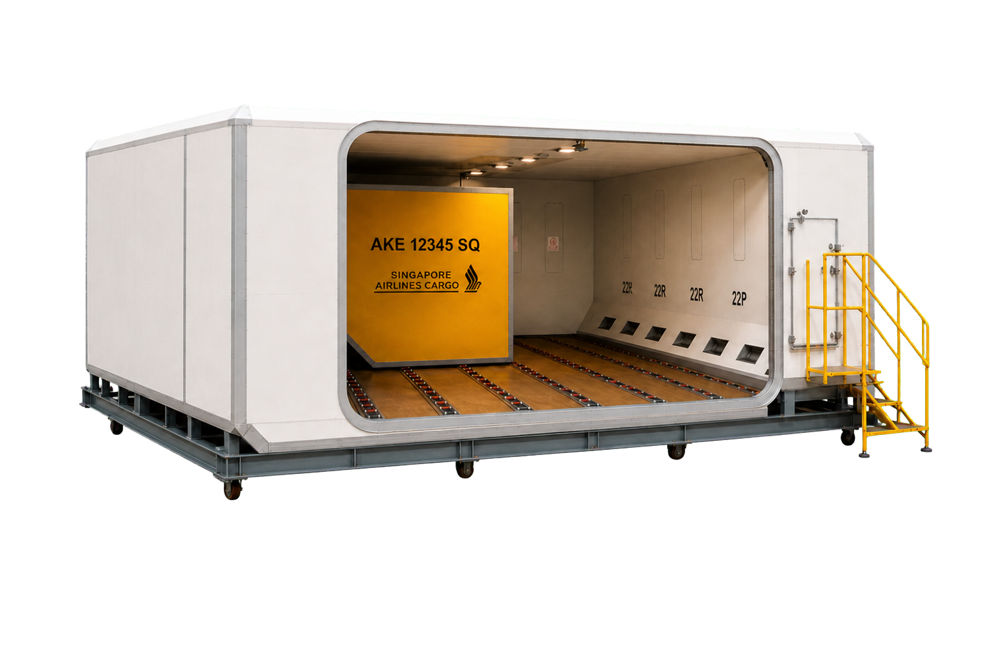
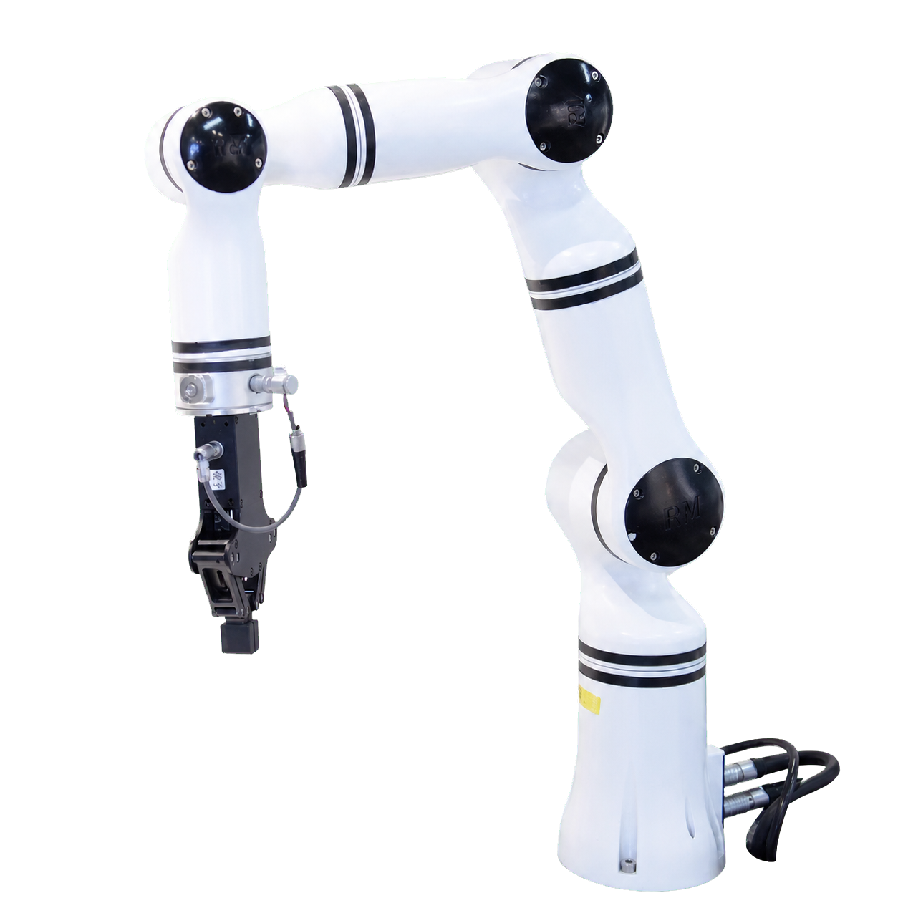
Use simulation scores to predict real-robot performance. The current environment already supports visually and physically rich contact scenarios, enabling consistent benchmark tasks before hardware deployment.
SIM 01 — High-fidelity task environment and robot interaction.
SIM 02 — Repeatable evaluation across contact-rich execution states.
RJ45 benchmark example
SIM 03 — RJ45 insertion and release dynamics.
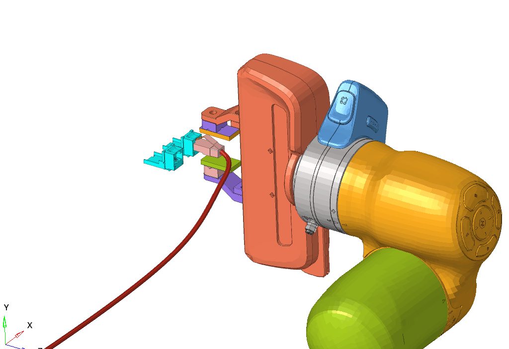
SIM 04 — Collision, geometry and latch deformation model.
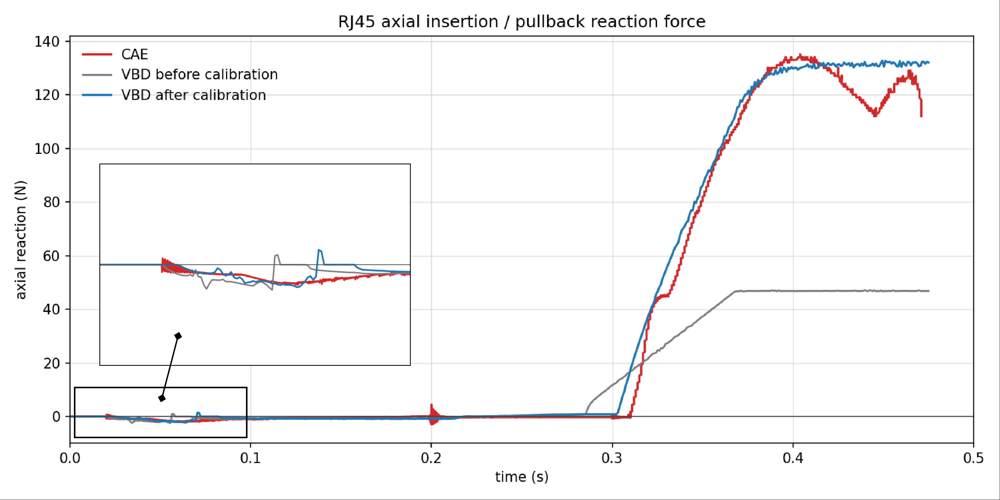
SIM 05 — Calibrated axial reaction-force agreement.
Part 03 / Deployment strategy / 2026
Move from a deterministic demo stack, through a hierarchical system with emerging generalization, toward an end-to-end agent that can imagine consequences before acting.
Closed-set detection, point-cloud registration, grasp pose estimation, taught motions and explicit state machines.
Perfect for a controlled demo showOpen-vocabulary perception, context planning, knowledge services, atomic skills and simulation-generated experience.
Generalization begins to emergePixels and instructions map to actions while predictive models supply future-state rollouts and data leverage.
The capability set exists in theoryDeterministic deployment
A modular pipeline solves one well-defined perception or motion problem at a time. Humans specify the sequence, teach edge cases and approve transitions. The result is explainable, testable and highly repeatable inside a controlled scene.
Fixed classes, fiducials or a constrained visual detector.
Calibrated RGB-D, ICP or PointNetLK estimates object pose.
AnyGrasp proposes ranked 7-DoF grasp candidates.
Collision checking and taught waypoints create a safe path.
A state machine runs the human-authored sequence.
Known camera extrinsics, bounded lighting and a verified collision model.
Reject uncertain detections and grasps instead of hiding failures downstream.
Retry, reobserve, regrasp and return-to-home are explicit behaviors.
The operator decides which skill runs next and what success means.

Real robot evidence. AnyGrasp demonstrates dense grasp perception across varied rigid and deformable objects. Source: official AnyGrasp project.
AnyGrasp demo. A complete demonstration of dense grasp perception and real-robot execution.
"For a fixed narrative and controlled props, this stage can satisfy the demo-show requirement completely."
AnyGrasp reports 93.3% bin-clearing success on more than 300 unseen objects and more than 900 mean picks per hour on a single-arm system. These results support grasp robustness, not open-ended task understanding.
Fang et al., IEEE Transactions on Robotics, 2023.
Aoki et al., CVPR 2019.
Steinmetz et al., IEEE Robotics and Automation Letters, 2019.
Hierarchical deployment
A semantic planner interprets goals and scene context. It never drives motors directly. Instead, it selects verified atomic skills whose preconditions, affordances and outcomes are grounded by perception and control models.
Grounding DINO or a related open-vocabulary detector maps language entities to image regions. Pose and grasp models convert regions into executable geometry.
An LLM or semantic planner uses scene state, task history and a knowledge service to propose the next useful skill and verify its symbolic preconditions.
Versioned skills expose typed inputs, success predicates, safety envelopes and learned affordance scores. Execution remains deterministic and observable.
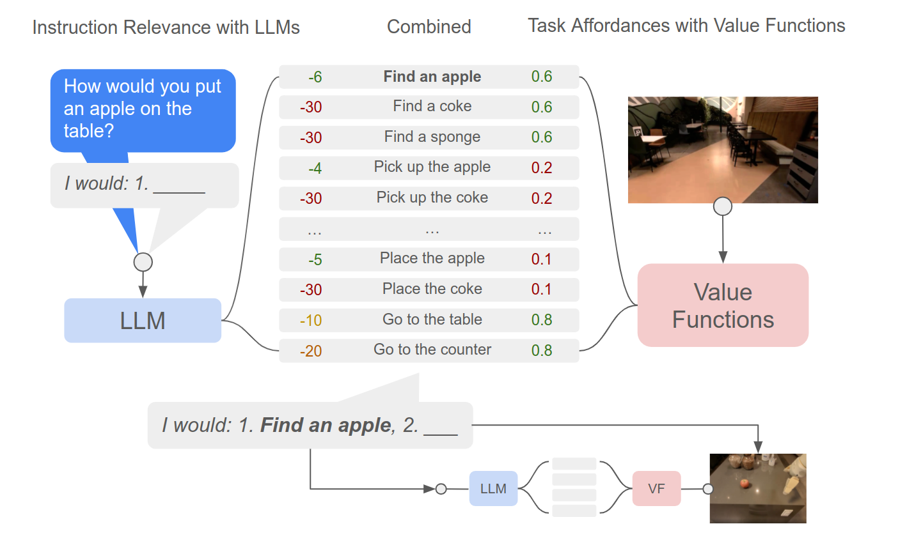
Representative work: SayCan. Language-model usefulness is multiplied by a skill affordance score, then the selected skill executes on the real robot.
The semantic layer proposes goals; a real-time controller owns actuation and stop conditions.
Every skill declares inputs, preconditions, timeout, success and recovery behavior.
Language entities must resolve to tracked scene objects before planning continues.
Perception and control confirm the world state after each skill, not only at task completion.
Real deployment. A mobile manipulator executes long-horizon kitchen and office tasks from natural-language goals.
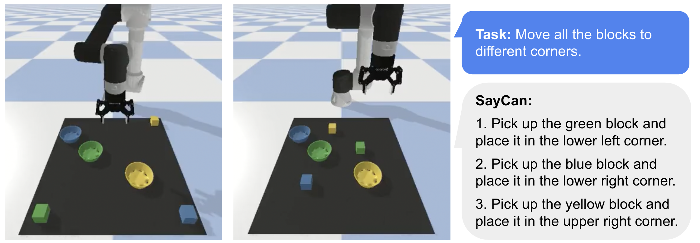
Simulation asset. Simulation provides repeatable task variation and a place to train or validate affordances before real deployment.
Produce scene layouts, object variants and task graphs in simulation.
Improve open-set perception, affordances and skill policies.
Convert real failures into new simulation scenarios and evaluation suites.
The robot can reinterpret instructions, select different skill sequences and handle unseen object labels. Generalization remains bounded by the perception vocabulary, skill coverage, affordance calibration and the realism of synthetic assets.
Ahn et al., CoRL 2022. High-level language planning grounded by pretrained atomic skills.
Liu et al., ECCV 2024.
Wang et al., ICML 2024. Automatically generates tasks, scenes, rewards and training experience.
Research frontier
A vision-language-action model maps observations and instructions directly to robot actions. A predictive world model supplies imagined futures, counterfactual rollouts and scalable experience beyond expensive robot trajectories.
Video, proprioception, language and interaction history.
The VLA predicts candidate action chunks directly.
The world model rolls candidates into possible futures.
A verifier ranks progress, feasibility and safety.
Execute a short horizon, reobserve and add experience.
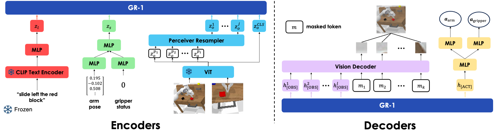
Representative work: GR-1. A GPT-style model predicts robot actions and future images in one sequence model.
First-person video exposes manipulation sequences, contact intent and object use at enormous scale.
GR-1 pretrains on Ego4D video prediction before robot-data fine-tuning.
Language-aligned human activity supports transfer to unseen scenes, phrasings and objects.
Human hands, camera motion and action labels do not directly equal robot controls.
Contact-rich action. GR-1 opens a real drawer from language-conditioned visual observations.
Unseen category. A real-robot transfer example using an object category absent from robot fine-tuning.
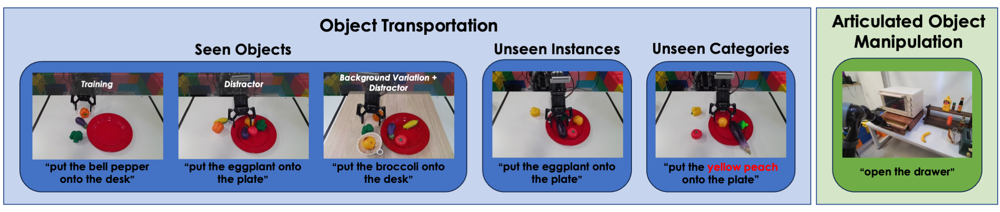
Paper overview. Real-robot transport and articulated-object tasks test visual and language generalization.
"No public system has yet closed this entire loop with production reliability across open-ended real environments."
The pieces now exist separately: VLA control, action-conditioned video prediction, interactive generative simulators, egocentric pretraining and short-horizon rollout. The unsolved work is their dependable integration under latency, safety, calibration and long-horizon error accumulation.
Joint action and future-image prediction; Ego4D pretraining; CALVIN and real-robot evaluation.
Web-scale vision-language knowledge transferred into tokenized robot actions.
Interactive visual rollouts used for planning and reinforcement-learning policy training.
Small visual prediction errors compound into incorrect physical conclusions.
Video futures must remain consistent with robot kinematics, contacts and control timing.
Open-ended policies still need independent limits, collision monitors and stop systems.
Wu et al., ICLR 2024. Uses 800,000 Ego4D clips and predicts both actions and future frames.
Brohan et al., 2023.
Yang et al., ICLR 2024 Outstanding Paper. Demonstrates long-horizon visual rollout, planning and RL transfer.
Recommended program
Build a reliable public demonstration and use it as the instrumentation baseline.
Retain the same controller while adding open-set grounding and a planner over verified skills.
Use the accumulated episodes, failures and simulation assets to evaluate VLA and world-model loops.
Recommendation: commit the real robot to Stage 01, design the software and data contracts for Stage 02, and treat Stage 03 as an offline research track until its rollout fidelity and safety metrics beat the hierarchical baseline.
Evidence checked: 28 Jul 2026